CUDI
Trabajo Final de Máster (TFM)
Portfolio de Auditoría y Diseño UI/UX
🌐 Acceso a la Plataforma Web CUDI
01. Plataforma Central e Internacionalización
Estrategia de Localización e Idiomas (i18n)
Un pilar documentado en el plan de negocio es la adaptación lingüística de la plataforma en tiempo real mediante un motor dinámico (`i18n.js`). Estratégicamente, se configuró el ecosistema web para operar en Catalán, Español e Inglés. Esta priorización es fundamental ya que CUDI fue concebida y está siendo desplegada inicialmente en la ciudad de Barcelona y su área metropolitana.
HOME HUB
Portal Principal
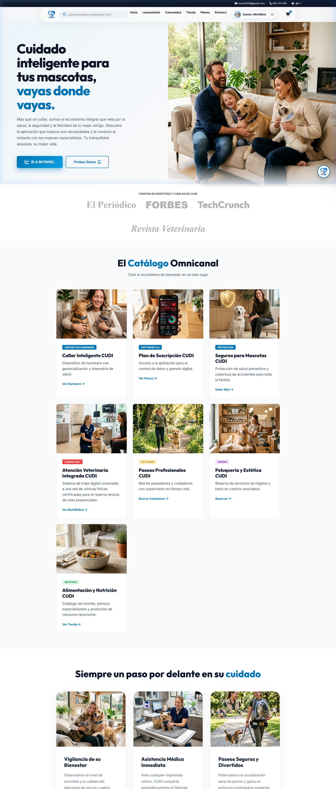
Estrategia y Propósito: El Index (Portal Principal) presenta de manera clara y accesible la misión corporativa. Facilita que el usuario comprenda inmediatamente los servicios disponibles y navegue intuitivamente hacia los planes e información detallada del Collar Inteligente.
SOCIAL HUB
Comunidad CUDI
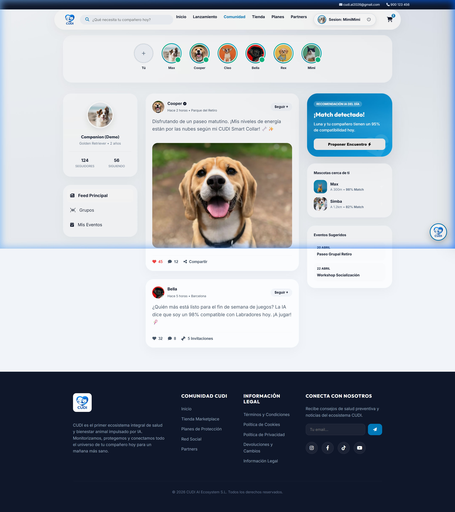
Estrategia y Propósito: Un panel social integrado donde los usuarios comparten fotos y experiencias. Permite generar engagement y fomentar una red comunitaria que acompaña el bienestar animal en un entorno seguro y familiar.
02. IoT: Simulador y Gemelo Digital
Aclaración: Visualizaciones iniciales de la demostración probaron diseños nocturnos (azulados). La UI final en la web utiliza estética neutra propia del ámbito de la salud.
SALUD Y TELEMETRÍA
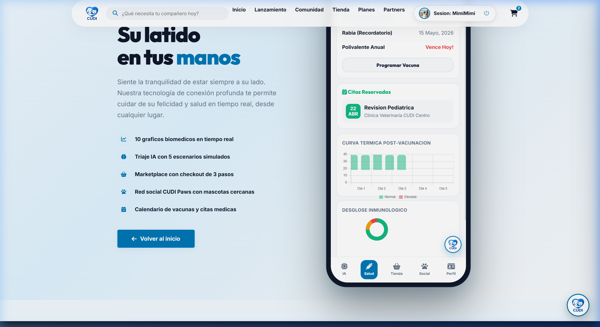
Propósito: Interfaz que representa de forma visual los datos de salud y ritmo cardíaco obtenidos desde el dispositivo IoT.
IA (MIMI) & TRIAJE
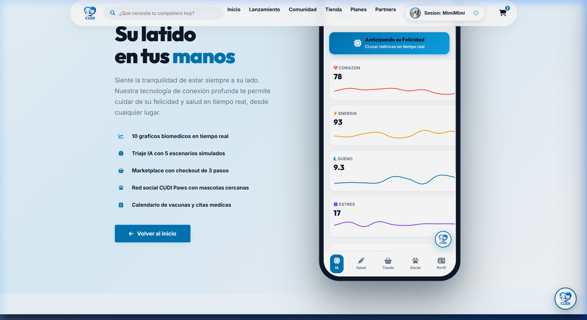
Propósito: Chat IA concebido como un primer punto de contacto para consultas de prevención, derivando al profesional si corresponde.
PERFIL UNIFICADO
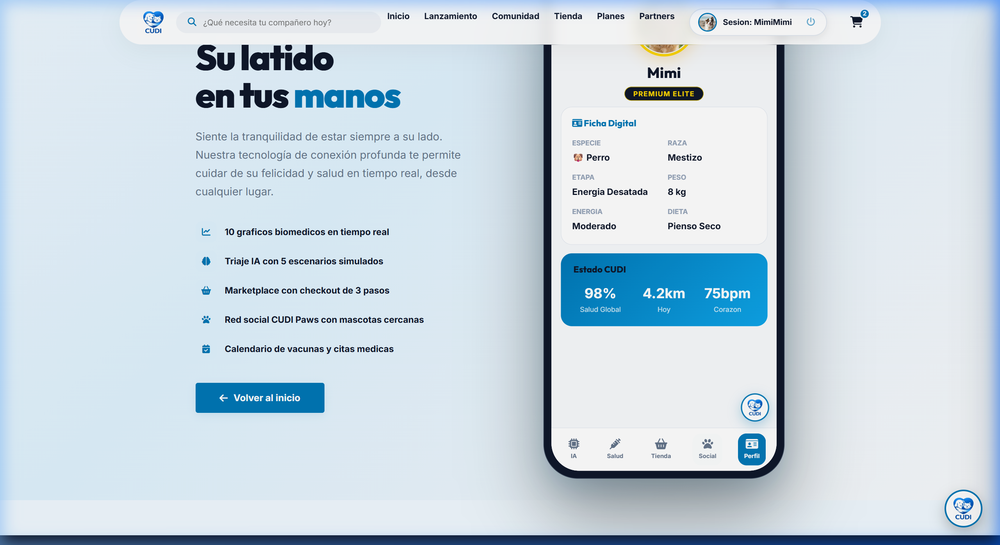
Propósito: Consolidación del historial médico, accesible de forma organizada para propietarios y clínicas afiliadas.
MARKETPLACE B2C
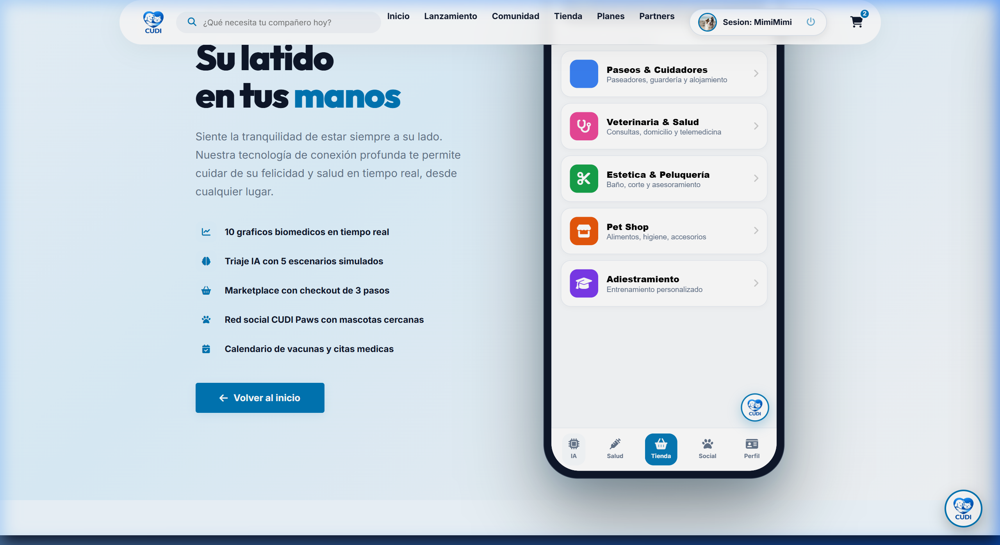
Propósito: Sección que sugiere productos afines a las necesidades actuales de la mascota.
03. Modelo SaaS y Módulo de Usuario Web
El Motor Financiero: Modelos de Suscripción (SaaS)
Como núcleo recurrente del modelo de negocio expuesto en el TFM, el sistema requiere de suscripciones activas. La arquitectura web dispone y documenta las páginas de "Planes" y el "Módulo de Usuario", piezas vitales para la retención y la generación del flujo de caja mensual (MRR).
SUBSCRIPTION TIERS (SAAS)
Planes CUDI Premium
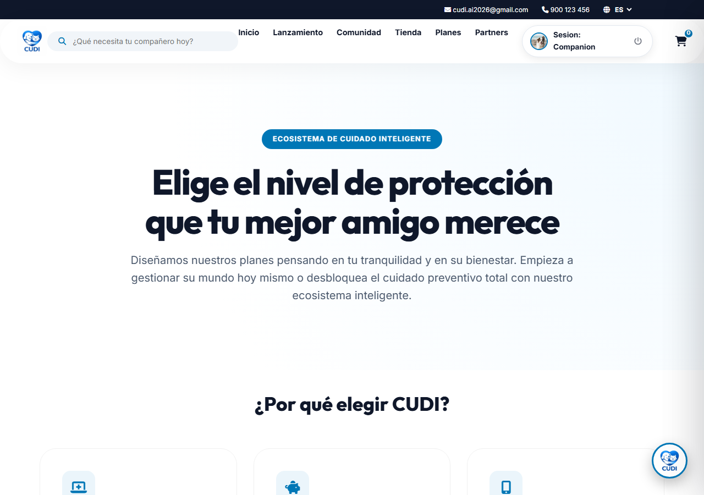
Estrategia de Pricing (planes-suscripcion-bienestar-animal.html): Despliegue de los niveles de servicio. A través de este módulo se estructuran los accesos de usuario (ej. cuenta gratuita vs membresía "All-in-One"), garantizando que los inversores o el jurado visualicen claramente cómo se monetiza la plataforma.
DASHBOARD WEB
Gestor Multiespecie: "Mi Mascota"
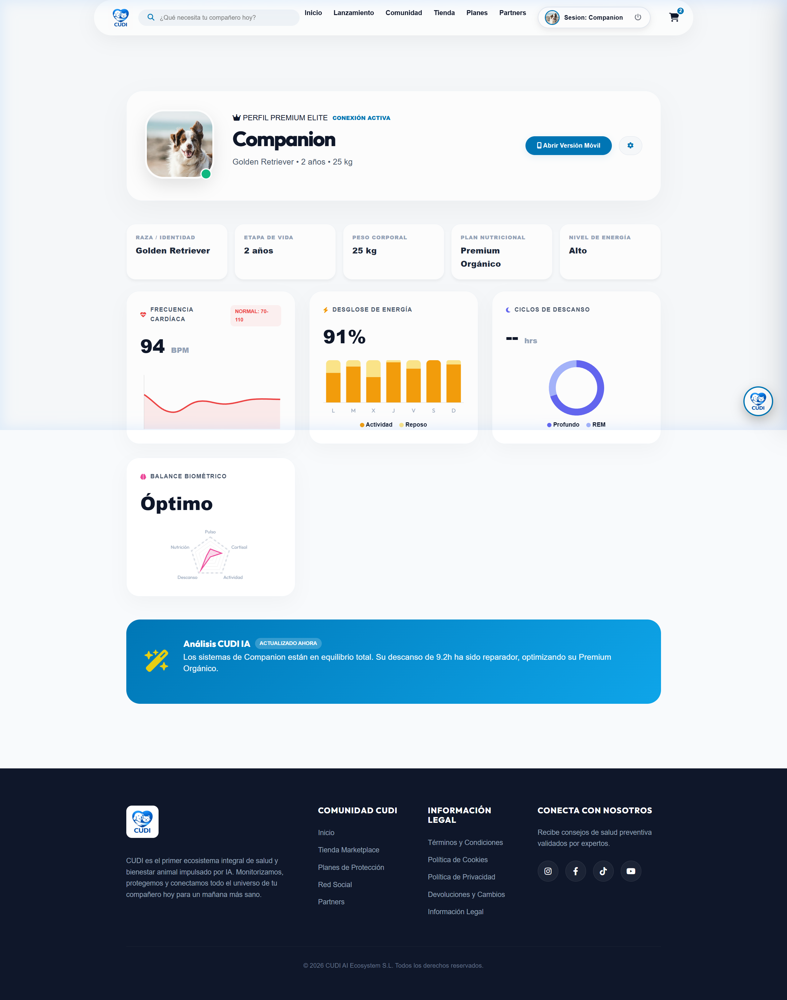
Centralización (mi-mascota.html): A diferencia del simulador móvil (App Demo), esta es la versión de escritorio operativa donde el dueño añade múltiples animales bajo una misma cuenta, accede legalmente a sus pólizas de seguro vinculadas e interactúa con el ecosistema de forma extendida y documental.
04. Marketplace: El Catálogo Omnicanal
Un Ecosistema Sin Fisuras
La fuerza de CUDI reside en su capacidad de agrupar todas las necesidades del animal bajo un único paraguas corporativo. No vendemos productos aislados, sino que ofrecemos una solución de vida completa.
COBERTURA 360º
Estructura del Marketplace por Categorías
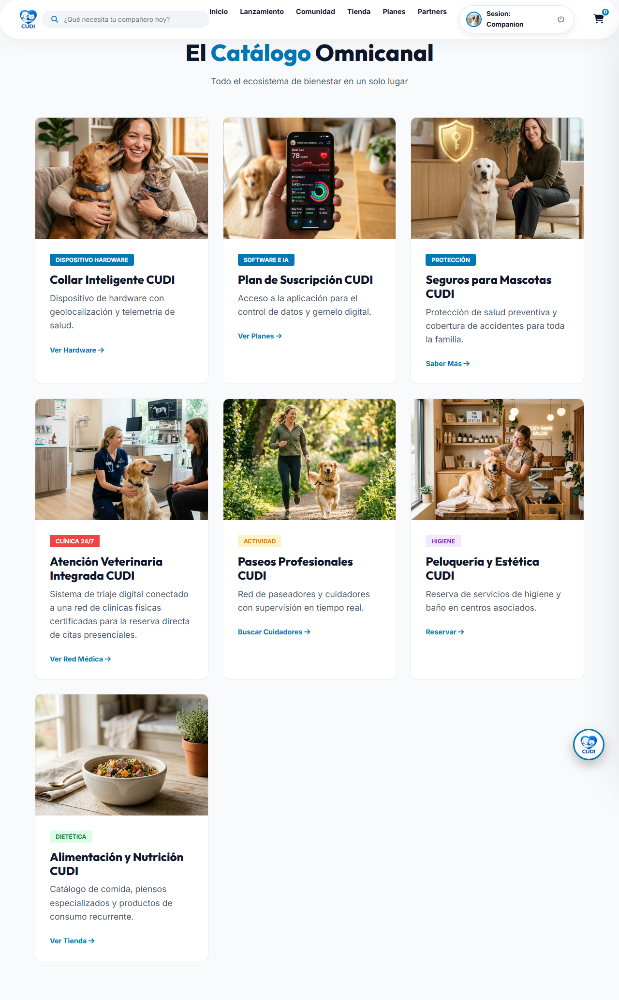
Mapeo del Valor del Negocio: Como se observa en el catálogo real, CUDI cubre las 7 macro-categorías del bienestar multiespecie:
- Hardware IoT: Smart Collar GPS.
- Software SaaS: App y Gemelo Digital.
- Protección: Seguros de Salud.
- Salud Médica: Veterinaria 24/7.
- Actividad: Paseadores Certificados.
- Estética: Bienestar e Higiene.
- Nutrición: Dietética Personalizada.
Este despliegue omnicanal garantiza que el usuario encuentre todo en una sola plataforma, eliminando la necesidad de buscar proveedores externos y consolidando el liderazgo de CUDI en el sector Pet-Tech.
05. Estrategia de Asistencia Omnicanal
La Omnicanalidad como Eje Conector
CUDI no es una colección de páginas aisladas. La estrategia omnicanal garantiza que el Asistente de IA (Mimi) esté presente en cada punto de contacto, guiando al usuario desde la lectura de un artículo clínico hasta la finalización de una compra o el triaje de una emergencia.
INTERFACE PERSISTENTE
Widget de IA Global (Mimi)
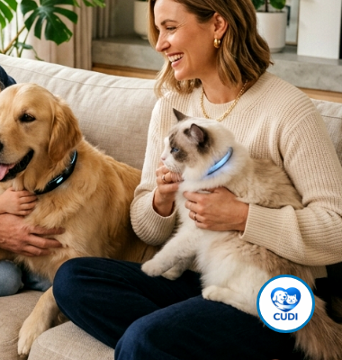
Propósito Estratégico: Reducir la fricción en el embudo de ventas y soporte. Este componente transversal actúa como el hilo conductor del ecosistema, permitiendo que un usuario en cualquier sección (Tienda, Journal, Landings) pueda resolver dudas, pedir recomendaciones de productos o iniciar un triaje de salud sin abandonar su navegación actual. Es la materialización de la asistencia 24/7 que define a CUDI.
06. Campaña de Lanzamiento "Aventuras sin Sustos"
LANDING PAGE DEDICADA
Campaña Principal: El Smart Collar
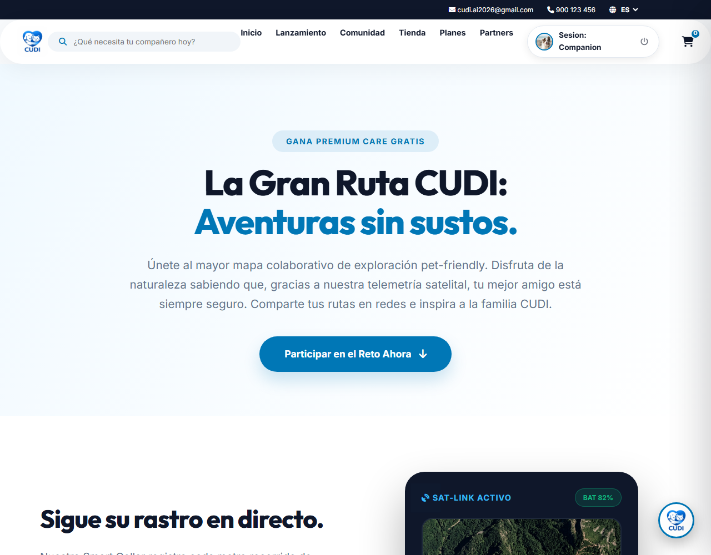
Estrategia de Lanzamiento ("Aventuras sin Sustos"): La comercialización inicial de CUDI no se basa en vender software directamente, sino en una campaña de adquisición de hardware físico: el Smart Collar con GPS. Esta landing page dedicada (smart-collar-aventuras-sin-sustos.html) funciona de embudo de marketing autónomo, focalizado en atacar el mayor punto de dolor del propietario (el riesgo de pérdida o accidente del animal en excursiones). Al comercializar prevención y seguridad, se genera un retorno rápido de capital e introduce a los usuarios directamente al ecosistema recurrente de CUDI.
BOT DE ADQUISICIÓN (LINK-IN-BIO)
Chatbot en Redes Sociales
> Tráfico de Instagram / TikTok aterriza en: cudi-redes-sociales-bot.html
> IA: "Por venir de RRSS tienes el envío del Smart Collar GRATIS."
> Cierre: Redirección transparente al Checkout de la Campaña.
Para apoyar esta Landing Page principal, trazamos un embudo social donde los usuarios aterrizan en un simulador de chat (Bot) desde canales de alto tráfico, ofreciendo una experiencia altamente interactiva y nativa al público objetivo.
07. Red de Socios (Partners) B2B
Escalabilidad mediante Alianzas
CUDI expande su capacidad operativa mediante la certificación de centros asociados. Esta red no solo provee servicios físicos, sino que actúa como validadora del estándar de calidad CUDI en el mundo real.
B2B EXPANSION
Certificación de Clínicas y Especialistas
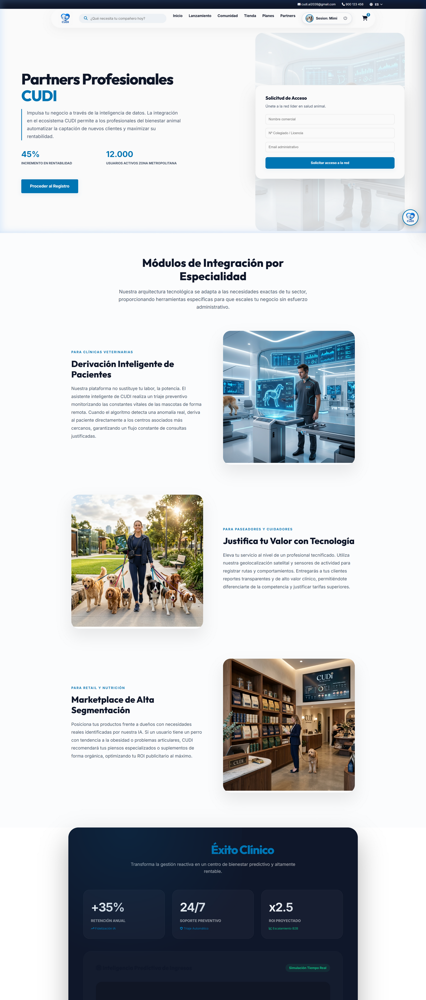
Estrategia de Partners (red-socios-clinicas-veterinarias.html):
Incorporación de clínicas veterinarias y especialistas como infraestructura de apoyo fundamental. Esta vinculación nos otorga capilaridad geográfica sin incurrir en costes de personal médico directo, siguiendo un modelo de negocio escalable y seguro para el usuario B2C. Las clínicas obtienen visibilidad y flujo de clientes, mientras que CUDI asegura una respuesta física inmediata para sus asegurados.
08. Marco Legal, SEO y Confianza (E-A-T)
LEGAL COMPLIANCE
Estructura Normativa y Protección
Soporte Legal documentado: Se ha desarrollado un ecosistema jurídico completo e integrado en la web para garantizar la seguridad del usuario y la viabilidad del proyecto:
- Privacidad de Datos: Cumplimiento estricto de RGPD para la gestión de datos biométricos y personales.
- Términos de Servicio: Marco contractual claro para el uso de la App y el hardware.
- Garantía y Devoluciones: Política específica para la comercialización del Smart Collar, asegurando la confianza en la compra.
SEO TÉCNICO E INBOUND
Autoridad de Marca e Indexación
Inbound SEO (Journal):
Posicionamiento orgánico mediante artículos técnicos (Ansiedad, Microbioma) que atraen tráfico cualificado y establecen a CUDI como autoridad médica.
Microdatos JSON-LD:
Marcado semántico avanzado para que los motores de búsqueda identifiquen productos, reseñas de clientes y eventos de salud automáticamente.